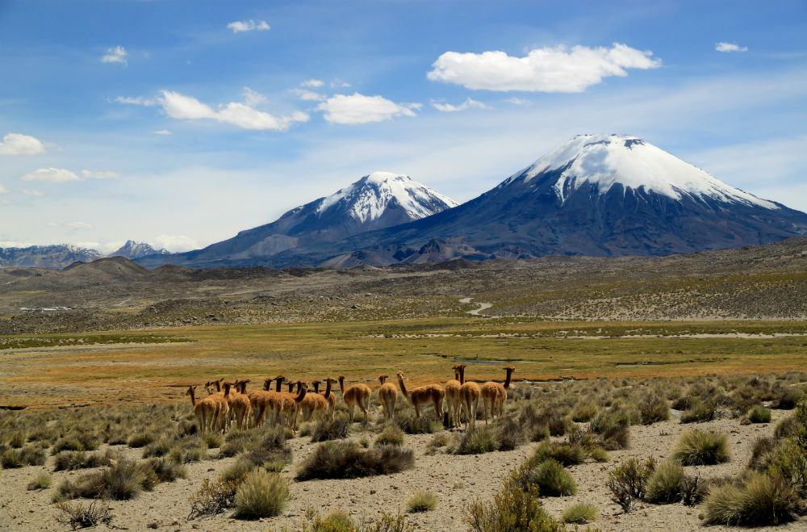

Áreas protegidas
“Son territorios protegidos legalmente que tienen la finalidad de asegurar la diversidad biológica, amparar la preservación de la naturaleza o conservar el patrimonio ambiental” (MMA, 2020)
En la pantalla pequeña la imagen es cuadrada. En la pantalla mediana es rectangular y apaisada, con lados en relación de aspecto 4:3. En la pantalla grande la relación es 16:9